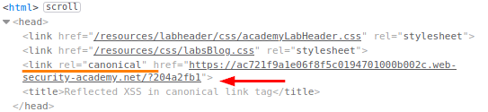
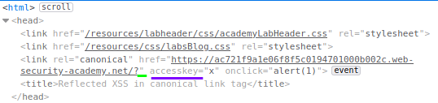

Reflected XSS in canonical link tag
Injections are possible even within tags that
don't usually fire events automatically, such as a
canonical tag.
You
can exploit this behavior using
access keys and user interaction on
Chrome.
Access keys allow you to provide keyboard shortcuts that reference
a specific element. The accesskey attribute allows you to define a letter that, when pressed in combination with
other keys (these vary across different platforms), will cause events to fire.
1. Submit a random
alphanumeric as parameter in the url box (example: 204a2fb1)
Use Burp Suite to intercept the search request and send it to Burp Repeater. Observe that the random
string has been reflected inside a quoted attribute.
2. How we can see, our request is been stored in a
canonical link tag3. Let's try this payload:
?'accesskey='x'onclick='alert(1)  How we can see from the source code,
the first quote close the link, and then with
accesskey we have inserted a shortcut(
X in this
case) that if pressed execute a payload
4. To trigger the exploit on yourself, press one of the following key
combinations:
◇ On Windows: ALT+SHIFT+X
◇ On MacOS: CTRL+ALT+X
◇ On Linux: Alt+X or
ALT+SHIFT+X
Bibliography:https://portswigger.net/web-security/cross-site-scripting/contexts/lab-canonical-link-tag